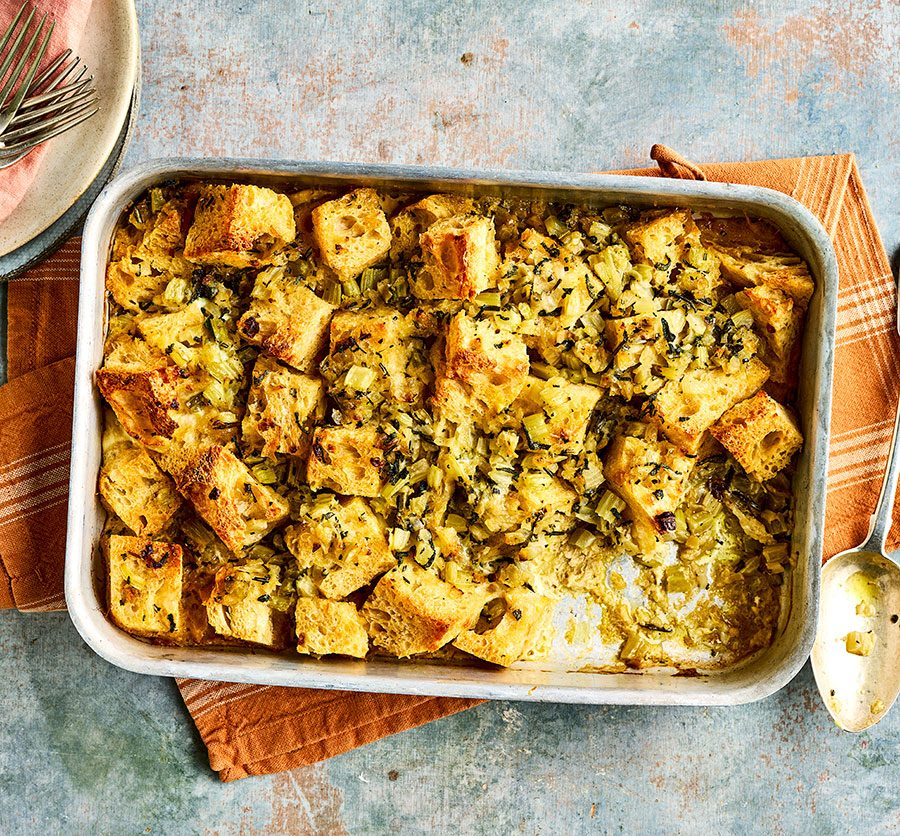

Recipe: Stuffing
Home | Recipe: Roast Turkey | Recipe: Cranberry Sauce

Make this when...
This question doesn't need answering. You don't need a reason or a time to make stuffing.
Tradition suggests this be served with turkey, but you're a grown-up - this delicious stuffing can be made simply & easily whenever you desire.
Ingredients
- French bread | 3lbs (approx 2-3 loaves)
- Salt & pepper | 1tsp/ea
- sausage | 1 lb
- Sage | 1 tbsp
- Butter | 4 tbsp
- Chicken stock | 1 cup
Instructions
- Preheat oven to 200F.
- Chop bread into small (1") chunks. Arrange on flat tray & dry in oven for 45 minutes.
- Melt butter & mix with sage. Break up sausage into small chunks & cook through.
- Add chicken stock to pot & scrape bottom.
- Mix stock & sausage mixture with bread. Place in buttered pan, cover tightly with foil, & bake 30 minutes.